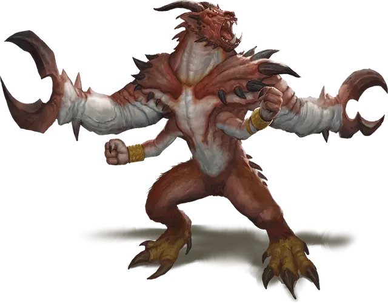

Глабрезу
Glabrezu
Большое Исчадие (Демон), хаотично-злое

Класс Доспеха 17 (природный доспех)
Хиты 157 (15к10 + 75)
Скорость 40 футов
| мод | спас | ||
|---|---|---|---|
| СИЛ | 20 | +5 | +9 |
| ЛОВ | 15 | +2 | +2 |
| ТЕЛ | 21 | +5 | +9 |
| мод | спас | ||
|---|---|---|---|
| ИНТ | 19 | +4 | +4 |
| МДР | 17 | +3 | +7 |
| ХАР | 16 | +3 | +7 |
Сопротивление урону огонь, холод, электричество; дробящий, колющий, рубящий от немагических атак
Иммунитет к урону яд
Иммунитет к состояниям отравление
Чувства истинное зрение 120 футов, пассивное Восприятие 13
Языки Бездны, Телепатия 120 фт.
Опасность 9 (5000 опыта)
Бонус мастерства +4
Особенности
Врождённое колдовство. Базовой характеристикой глабрезу является Интеллект (Сл спасброска от заклинания 16). Глабрезу может накладывать следующие заклинания, не нуждаясь в материальных компонентах:
• Неограниченно: обнаружение магии [detect magic], рассеивание магии [dispel magic], тьма [darkness].
• 1/день каждое: полёт [fly], слово силы: оглушение [power word stun], смятение [confusion].
Сопротивление магии. Глабрезу совершает с преимуществом спасброски от заклинаний и прочих магических эффектов.
Вариант: призыв демона. У некоторых демонов может быть действие, позволяющее им призывать других демонов.
Призыв демона (1/день). Демон выбирает, кого призвать, и пытается это сделать. Глабрезу получает 30% шанс призыва 1к3 вроков [vrock], 1к2 хезроу [hezrou] или одного глабрезу [glabrezu].
Призванный демон появляется в свободном пространстве в пределах 60 футов от призывателя, и действует как его союзник, не имеющий способности призывать демонов. Он призывается на 1 минуту или пока призыватель не умрёт или действием его не отпустит.
Действия
Мультиатака. Глабрезу совершает четыре атаки: две клешнями, и две кулаками. В качестве альтернативы, он совершает две атаки клешнями и накладывает одно заклинание.
Клешня. Рукопашная атака оружием: +9 к попаданию, досягаемость 10 футов, одна цель. Попадание: Дробящий урон 16 (2к10 + 5). Если цель — существо с размером не больше Среднего, оно становится схваченным (Сл высвобождения равна 15). У глабрезу есть две клешни, и каждая может держать по одной цели.
Кулак. Рукопашная атака оружием: +9 к попаданию, досягаемость 5 футов, одна цель. Попадание: Дробящий урон 7 (2к4 + 2).
Описание
Глабрезу наслаждается, искушая смертных, и они одни из немногих демонов, готовы предложить свои услуги тому глупцу, что осмелился призвать их.
Глабрезу страшны в бою, но предпочитают уничтожать соблазном, используя как приманку власть и богатство. Заключая коварные, хитрые сделки, они копят богатства, которые, как и обещали, отдают недальновидным призывателям и глупым смертным. Если же жертва не поддалась соблазну и обману, они применят силу, чтобы одержать победу.
См. дополнительно статью: "Бестиарий: Демоны"